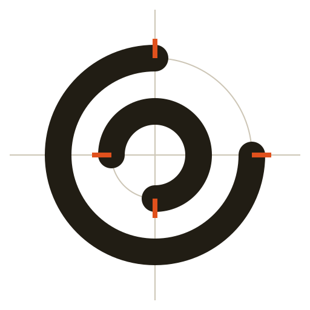

SHEET 01 · ARC 3D MODELING · SCALE 1:1
Model on a
drawn plan
arc is a solid modeling application for design, architecture, and interiors — sketch, extrude, place walls like building parts, and adjust everything in place. Native on Windows, macOS, and Linux.

NE gap R72
SW gap
0205
What you draw
- primitives
Box, sphere, cylinder, cone, torus, plane — typed as numbers, edited in place, no dialog stack.
- sketch
Circles, lines, polylines, rectangles, and walls on the ground plane, snapping to grid and geometry.
- solids
Extrude, revolve, sweep, and loft a profile into a watertight solid.
- architecture
Walls, stairs, slabs, roofs, columns, beams, doors, and windows that behave like building parts.
- layers
Visibility, locking, and colors with per-entity overrides.
- history
Every change is one reversible step on the undo stack — keep going, nothing is final.
- documents
Several open at once. The native .arc document is plain JSON.
- formats
STEP in and out (B-rep), OBJ and binary STL up and down.
0305
Under the hood
Three layers, one chart. The UI is React, the document lives in a Rust kernel, and between them run typed commands — nothing reads a screen copy of the model.
WebGL viewport, picking, drafting tools, themes, property panels.
Document, entities, layers, history; B-rep solids and booleans; STEP; mesh generation.
Run on new · open · save · start, reach the document through a small API.
0405
Plugins, in three lines
Drop a Lua file next to your documents. It runs on document events and edits the model directly — same objects, same commands the UI uses.
local function block()
return { type = "box", width = 600, depth = 400, height = 260 }
end
arc.on("new", function()
local id = arc.add_entity(block(), "site volume")
arc.log("new document → " .. id)
end)0505
Ten minutes to first wall
Installers on GitHub Releases: MSI and NSIS for Windows, DMG for macOS, AppImage, DEB, and RPM for Linux. A flatpak of the latest release lives in arc's own repository — published alongside every release:
# one-time: add the arc remote
flatpak remote-add arc https://remgr12.github.io/arc/flatpak-repo
# install
flatpak install arc com.arc.cadThe app updates itself against the same channel; small green arrow in the title bar when a new build ships.
Repo is github.com/Remgr12/arc. A release build takes one command per side.
# frontend once
git clone https://github.com/Remgr12/arc.git && cd arc
npm --prefix frontend install && npm --prefix frontend run build
# dev, or a release bundle
cargo tauri dev
cargo tauri buildWindows needs WebView2; Linux targets the freedesktop 24.08 runtimes.